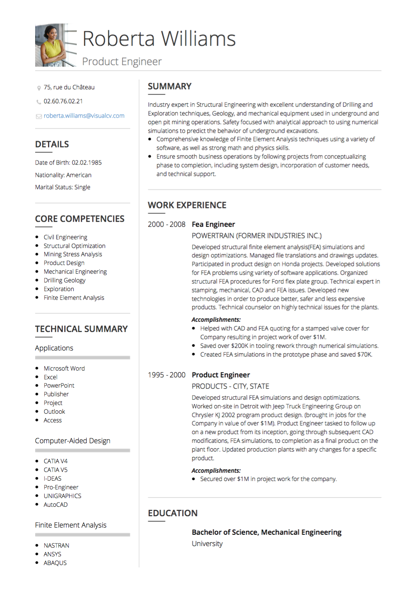

France Requis CV
Cette section exposera les exigences d'un CV français. La France a son propre ensemble d'attentes CV distinctes de celles d'autres pays.

France CV Conseils et règles:
Durée: un CV en France ne doit pas dépasser deux pages.
Terminologie: Même si le mot «CV» a ses racines dans la langue française, que beaucoup d'Anglos appellent un curriculum vitae, le français appelle CV. Ne pas les confondre, car il est important d'avoir la terminologie correcte
- pour vos applications professionnelles en France, vous écrivez un CV, pas un CV.
France CV Format, commande et mise en page:
Photo: En CV français, une image est attendue . Selon Samia Zeriahene, cité dans The Local , une photo appropriée et professionnelle est la clé. “Il est bon de montrer que vous avez pris le temps de prendre une photo spéciale pour votre CV”, dit Zeriahene.
Informations personnelles: incluez votre nom, adresse, numéro de téléphone , adresse électronique , date de naissance (ou âge) et état civil (ainsi que le nombre d'enfants que
vous avez).
Objectif: Une brève description de vos points forts et objectifs est acceptable d'inclure près du sommet de votre CV.
Expérience de travail: votre section Expérience professionnelle est la partie la plus importante de votre CV. Affichez vos positions précédentes dans un ordre chronologique inverse, y compris le nom de l'entreprise, votre titre
d'emploi et les dates que vous avez occupées. Selon cvrite , vous devez «inclure des faits et des chiffres pour fournir une substance au contenu» - utiliser des informations quantifiables dans
la mesure du possible pour compléter vos réalisations
Éducation: présentez vos réalisations académiques les plus impressionnantes. Inclure les dates, les diplômes et les noms des établissements.
Autres sections de CV de France:
Compétences: une brève liste de compétences peut être un atout pour votre CV. Les listes de compétences sont de grandes façons de mettre en évidence vos capacités d'une manière rapide et digeste.
Expérience de bénévolat: Cette section devrait être brève si vous choisissez d'en avoir une, mais l'inclusion peut montrer que vous êtes bien équilibré et travailleur.
Langues: inclure une liste discrète de langues que vous maîtrisez.
Conclusion:
Lors de l'écriture de votre CV pour les postes en France, il est important de personnaliser le contenu pour mieux s'adapter à la culture du travail français. Les attentes sont différentes des curriculum vitae américains - par exemple, l'âge et
une image sont attendus. Si possible, avoir un look local français sur votre CV est une excellente façon d'obtenir des commentaires sur votre CV en France.